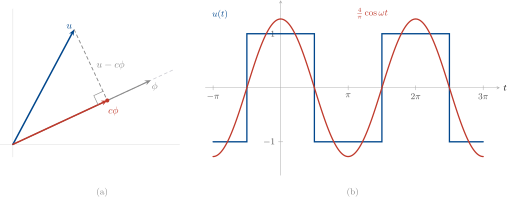
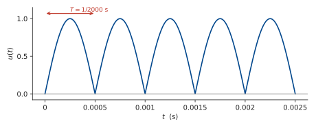
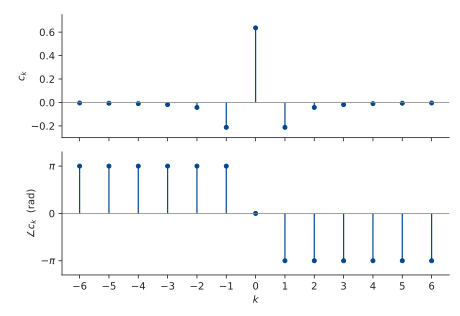
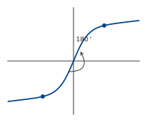
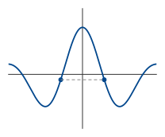
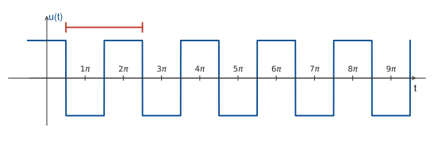
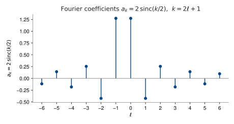
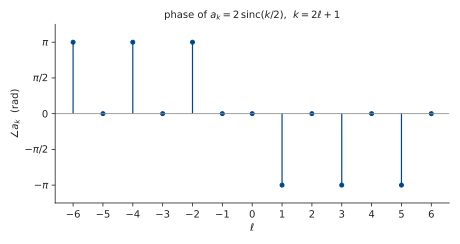

Week 4 — Lecture notes
Periodic signals and the Fourier series
Other formats:
📄 PDFFrom impulses to sinusoids
This week we start to develop frequency-domain tools.
So far, we have seen that any (integrable) signal can be represented as an integral (“sum”) of impulses. This week we develop an alternative representation for periodic signals, by changing the basis signals from impulses to sinusoids. This is the Fourier series.
Recap. If a system is LTI, it preserves the frequency of a sinusoidal input:
u = e^{\,j\omega t} \;\longmapsto\; G(j\omega)\,e^{\,j\omega t}, \qquad G(j\omega) \in \mathbb{C}.
In other words, e^{\,j\omega t} is an eigenvector of the system. If we can express any u in this basis, as a sum of sinusoids, this will “diagonalise the system” and “simplify analysis”, in ways that we will soon see.
This also gives a quick test of whether a system is LTI: inject a sinusoid and see what comes out at the output.
Approximating a periodic signal
A signal u(t) is T-periodic if u(t)=u(t−T). The fundamental frequency of u is the frequency corresponding to smallest T such that u(t) is T-periodic. For example, sin(t) is 2\pi periodic, but also 4\pi periodic, 6\pi periodic, etc. The fundamental frequency is the frequency corresponding to period 2\pi, that is, 1 rad/s.
For the sum of two signals to be T-periodic, the individual signals must both be T-periodic, so we want to find the minimum common period of the two sinusoids.
Let u(t) be an arbitrary periodic signal with fundamental frequency \frac{2\pi}{T}.
\phi(t) := e^{\,j\left(\frac{2\pi}{T}t\right)} \quad\text{also periodic on } [0,T]. \qquad \text{Let } \tfrac{2\pi}{T} =: \omega.
How well can we approximate u(t) by scaling & rotating e^{j\omega t}?
We already have a measure of the size of a periodic signal:
P(u) := \frac{1}{T}\int_0^T |u(t)|^2\,\mathrm{d}t = \langle u, u\rangle_P = \|u\|_P^2 \qquad (\text{see Lecture 2}).
Multiplying \phi by c \in \mathbb{C} gives us a scaling and rotation of \phi:
c = a\,e^{\,j\vartheta} \;(\text{polar form}) \quad\text{so}\quad c\phi = a\,e^{\,j(\omega t + \vartheta)}.
Here a is the scale, and the rotation = phase shift.
Let’s minimise J(c) = \|u - c\phi\|_P^2 over c \in \mathbb{C}, then u \approx c\phi.
\begin{aligned} J(c) &= \langle u - c\phi,\; u - c\phi\rangle_P \\[2pt] &= \langle u, u\rangle_P - \langle u, c\phi\rangle_P - \langle c\phi, u\rangle_P + \langle c\phi, c\phi\rangle_P \\[2pt] &= \|u\|_P^2 - \bar{c}\,\langle u,\phi\rangle_P - c\,\overline{\langle u,\phi\rangle}_P + |c|^2\,\|\phi\|_P^2 . \qquad(1) \end{aligned}
We can simplify \|\phi\|_P^2:
\|\phi\|_P^2 = \frac{1}{T}\int_0^T e^{\,j\omega t}\,e^{-j\omega t}\,\mathrm{d}t = \frac{1}{T}\int_0^T 1\,\mathrm{d}t = 1 .
Let \gamma := \langle u,\phi\rangle. Then we can write (1) as
J(c) = \|u\|_P^2 - \bar{c}\gamma - c\bar{\gamma} + |c|^2 .
Now notice that
\begin{aligned} |c-\gamma|^2 &= (c-\gamma)\overline{(c-\gamma)} \\[2pt] &= |c|^2 - \gamma\bar{c} - c\bar{\gamma} + |\gamma|^2 . \end{aligned}
So
J(c) = \|u\|_P^2 + |c-\gamma|^2 - |\gamma|^2 .
All terms are positive. This is minimised when |c-\gamma|^2 = 0, that is,
\boxed{\,c = \langle u,\phi\rangle_P = \frac{1}{T}\int_0^T u(t)\,e^{-j\omega t}\,\mathrm{d}t\,}
The least-squares approximation of u(t) by \phi(t) is therefore
\boxed{\,c\phi = \frac{\langle u,\phi\rangle_P}{\|\phi\|_P^2}\,\phi\,}
This is the projection of u onto \phi.

This procedure is exactly the same for \phi_k = e^{\,jk\omega t} for any k \in \mathbb{Z}, so we define
\boxed{\,c_k = \langle u,\phi_k\rangle_P = \frac{1}{T}\int_0^T u(t)\,e^{-jk\omega t}\,\mathrm{d}t\,}
These are the complex Fourier coefficients.
The Fourier series
Each coefficient gives a least-squares approximation of u(t) by \phi_k(t), calculated as
u(t) \approx c_k \phi_k = \frac{\langle u,\phi_k\rangle_P}{\|\phi_k\|_P^2}\,\phi_k,
the projection of u onto \phi_k.
It turns out that the sum of all these approximations is an exact representation of u(t) (provided it is sufficiently well-behaved):
\boxed{\,u = \sum_{k=-\infty}^{\infty} c_k \phi_k = \sum_{k=-\infty}^{\infty} \langle u,\phi_k\rangle_P\,\phi_k, \qquad \phi_k(t) = e^{\,jk\omega t}\,}
This is the Fourier series of u. It also turns out that each c_k is independent, as \phi_k are orthogonal, so the finite sum \displaystyle\sum_{k=-n}^{n} \langle u,\phi_k\rangle_P\,\phi_k is a least-squares approximation of u by \{\phi_k\}_{k=-n,\dots,n}. See the extension section below for the full details.
For k = 0, we have
\begin{aligned} c_0 = \langle u,\phi_0\rangle &= \frac{1}{T}\int_0^T u\,e^{0}\,\mathrm{d}t \\[2pt] &= \frac{1}{T}\int_0^T u(t)\,\mathrm{d}t . \qquad \text{Average value of } u = \text{DC offset.} \end{aligned}
Extension material
Why are the c_k independent?
First, let’s calculate
\begin{aligned} \langle \phi_k, \phi_\ell\rangle &= \frac{1}{T}\int_0^T e^{\,jk\omega t}\,e^{-j\ell\omega t}\,\mathrm{d}t \\[2pt] &= \frac{1}{T}\int_0^T e^{\,+j(k-\ell)\omega t}\,\mathrm{d}t \\[2pt] &= 1 \quad \text{if } k = \ell \quad\text{or} \\[6pt] &= \left[\frac{1}{+j(k-\ell)\omega}\,e^{\,+j(k-\ell)\omega t}\right]_0^{T} \\[6pt] &= 0 \quad \text{as } e^{\,+j(k-\ell)\omega t} \text{ is } T\text{-periodic.} \end{aligned}
This means the \phi_k are orthogonal.
Now let’s minimise \left\|u - \sum_k c_k \phi_k\right\|_P^2.
\begin{aligned} \left\|u - \sum_k c_k \phi_k\right\|_P^2 &= \left\langle u - \sum_k c_k \phi_k,\; u - \sum_k c_k \phi_k\right\rangle_P \\[6pt] &= \|u\|_P^2 + \left\langle u,\, -\sum_k c_k \phi_k\right\rangle + \left\langle -\sum_k c_k \phi_k,\, u\right\rangle \\&+ \left\langle \sum_k c_k \phi_k,\, \sum_k c_k \phi_k\right\rangle \\[6pt] &= \|u\|_P^2 - \sum_k \bar{c}_k \underbrace{\langle u,\phi_k\rangle}_{:=\,\gamma_k} - \sum_k c_k \overline{\langle u,\phi_k\rangle} + \underbrace{\sum_k \sum_\ell c_k \bar{c}_\ell \langle \phi_k,\phi_\ell\rangle}_{=\,0 \text{ for } k \neq \ell} \\[6pt] &= \|u\|_P^2 - \sum_k \left(\bar{c}_k \gamma_k + c_k \bar{\gamma}_k\right) + \sum_k c_k \bar{c}_k \langle \phi_k,\phi_k\rangle . \end{aligned}
Following the same completion of squares argument as before, we have
= \|u\|_P^2 + \sum_k |c_k - \gamma_k|^2 - \sum_k |\gamma_k|^2 .
This is minimised when c_k = \gamma_k for all k. These are the Fourier coefficients we derived earlier with individual minimisations!
If u(t) is real, its Fourier series must be real:
\operatorname{Im}\!\left(\sum_k c_k \phi_k\right) = 0.
This is achieved if
\begin{aligned} c_k \phi_k &= \overline{c_{-k}\,\phi_{-k}} \\[2pt] &= \overline{c_{-k}}\,\phi_k . \end{aligned}
So c_k = \overline{c_{-k}}. In particular, c_0 = \overline{c_0}, so c_0 is real.
The sine–cosine form for a real signal
In the real case, we can also derive a sin/cosine form of the Fourier series.
\frac{e^{\,j\omega t} + e^{-j\omega t}}{2} = \cos\omega t, \qquad \frac{e^{\,j\omega t} - e^{-j\omega t}}{2j} = \sin\omega t.
Let c_k = \tfrac{1}{2}(a_k - j b_k), k \geq 0. Then
\begin{aligned} c_k e^{\,jk\omega t} + c_{-k} e^{-jk\omega t} &= c_k e^{\,jk\omega t} + \bar{c}_k e^{-jk\omega t} \\[2pt] &= \tfrac{1}{2}(a_k - j b_k)\big(\cos(k\omega t) + j\sin(k\omega t)\big) + \tfrac{1}{2}(a_k + j b_k)\big(\cos(k\omega t) - j\sin(k\omega t)\big) \\[2pt] &= a_k \cos(k\omega t) + b_k \sin(k\omega t) . \end{aligned}
So we have an alternative form for the Fourier series of a real function u:
\boxed{\;u(t) = a_0 + \sum_{k=1}^{\infty} a_k \cos(k\omega t) + b_k \sin(k\omega t),\;}
where
\begin{aligned} a_0 &= c_0 \\[4pt] a_k &= 2\operatorname{Re}(c_k) = \frac{2}{T}\int_0^T u(t)\cos(k\omega t)\,\mathrm{d}t \\[4pt] b_k &= -2\operatorname{Im}(c_k) = \frac{2}{T}\int_0^T u(t)\sin(k\omega t)\,\mathrm{d}t . \end{aligned}
Example: the bridge rectifier
Example: Compute the Fourier series of the output of a bridge rectifier driven by a 1000\,Hz sinusoid,
u(t) = \left|\sin(2000\pi t)\right| .

The input frequency is 1000\,\text{Hz} = 2000\pi\,rad/s. Rectification doubles this, so the fundamental frequency of u is
\omega_0 = 4000\pi \;\text{rad/s}, \qquad T = \frac{2\pi}{\omega_0} = \frac{1}{2000}\,\text{s}.
On [0,T] the argument 2000\pi t runs from 0 to \pi, where the sine is non-negative, so u(t) = \sin\!\left(\tfrac{\omega_0}{2}t\right) there and the absolute value can be dropped.
Start with the DC term:
\begin{aligned} c_0 = \frac{1}{T}\int_0^T u(t)\,\mathrm{d}t &= 2000\int_0^{1/2000} \sin(2000\pi t)\,\mathrm{d}t \\[6pt] &= 2000\left[\frac{-\cos(2000\pi t)}{2000\pi}\right]_0^{1/2000} \\[6pt] &= \frac{1}{\pi}\Big(\cos(0) - \cos(\pi)\Big) = \frac{2}{\pi} . \end{aligned}
Now the general coefficient:
\begin{aligned} c_k = \frac{1}{T}\int_0^T u(t)\,e^{-jk\omega_0 t}\,\mathrm{d}t &= \frac{\omega_0}{2\pi}\int_0^{2\pi/\omega_0} \sin\!\left(\frac{\omega_0}{2}t\right) e^{-jk\omega_0 t}\,\mathrm{d}t \\[6pt] &= \frac{\omega_0}{2\pi}\int_0^{2\pi/\omega_0} \frac{1}{2j}\left(e^{\,j\frac{\omega_0}{2}t} - e^{-j\frac{\omega_0}{2}t}\right) e^{-jk\omega_0 t}\,\mathrm{d}t \\[6pt] &= \frac{\omega_0}{4\pi j}\int_0^{2\pi/\omega_0} \left(e^{\,j\frac{\omega_0}{2}(1-2k)t} - e^{-j\frac{\omega_0}{2}(1+2k)t}\right)\mathrm{d}t \\[6pt] &= \frac{\omega_0}{4\pi j}\left[\frac{2\,e^{\,j\frac{\omega_0}{2}(1-2k)t}}{j\omega_0(1-2k)} + \frac{2\,e^{-j\frac{\omega_0}{2}(1+2k)t}}{j\omega_0(1+2k)}\right]_0^{2\pi/\omega_0} . \end{aligned}
At t = 2\pi/\omega_0 the two exponentials are e^{\,j\pi(1-2k)} and e^{-j\pi(1+2k)}. Both 1-2k and 1+2k are odd, so both exponentials equal -1:
\begin{aligned} c_k &= \frac{\omega_0}{4\pi j}\left(-\frac{4}{j\omega_0}\right)\left(\frac{1}{1-2k} + \frac{1}{1+2k}\right) \\[6pt] &= -\frac{1}{\pi j^2}\cdot\frac{(1+2k) + (1-2k)}{(1-2k)(1+2k)} \\[6pt] &= \boxed{\;\frac{2}{\pi\left(1-4k^2\right)}\;} \end{aligned}
Setting k=0 recovers c_0 = 2/\pi.

In sine–cosine form, b_k = -2\operatorname{Im}(c_k) = 0 and a_k = 2\operatorname{Re}(c_k), so
u(t) = \frac{2}{\pi} + \sum_{k=1}^{\infty} \frac{4}{\pi\left(1-4k^2\right)}\cos(k\omega_0 t) .
It turns out that the fact the sine series is zero is something we can see straight away from the symmetry of the signal.
Symmetry properties of the Fourier series
★ Odd functions: \;f(-x) = -f(x). Rotational symmetry (180^\circ).

★ Even functions: \;f(-x) = f(x). Symmetry about y-axis.

The Fourier series simplifies for even and odd functions.
① Odd u(t): calculate a_k.
a_k = \frac{2}{T}\int_0^T u(t)\cos(k\omega t)\,\mathrm{d}t .
u(-t)\cos(-k\omega t) = -u(t)\cos(k\omega t) \quad(\text{odd}).
Since u(t) & \cos(k\omega t) are T-periodic, we can shift the limits of integration:
\begin{aligned} a_k &= \frac{2}{T}\int_{-T/2}^{T/2} u(t)\cos(k\omega t)\,\mathrm{d}t \\[6pt] &= \frac{2}{T}\int_{-T/2}^{0} u(t)\cos(k\omega t)\,\mathrm{d}t + \frac{2}{T}\int_{0}^{T/2} u(t)\cos(k\omega t)\,\mathrm{d}t \\[6pt] &= -\frac{2}{T}\int_{0}^{-T/2} u(t)\cos(k\omega t)\,\mathrm{d}t + \frac{2}{T}\int_{0}^{T/2} u(t)\cos(k\omega t)\,\mathrm{d}t . \end{aligned}
Let \tau = -t. \;\mathrm{d}\tau = -\mathrm{d}t.
\begin{aligned} &= +\frac{2}{T}\int_{0}^{T/2} u(-\tau)\cos(-k\omega\tau)\,\mathrm{d}\tau + \frac{2}{T}\int_{0}^{T/2} u(t)\cos(k\omega t)\,\mathrm{d}t \\[6pt] &= -\frac{2}{T}\int_{0}^{T/2} u(\tau)\cos(k\omega\tau)\,\mathrm{d}\tau + \frac{2}{T}\int_{0}^{T/2} u(t)\cos(k\omega t)\,\mathrm{d}t = 0 \\ &\hphantom{=} \quad (\text{as } u(\tau)\cos(k\omega\tau) \text{ is odd}), \end{aligned}
So for odd functions, \boxed{a_k = 0}. Similarly, a_0 = 0, so we get a pure sine series.
For even functions, a similar argument shows that \boxed{b_k = 0} and we get a cosine series + DC term.
Example: Fourier series of a square wave
Example: Compute the Fourier series of the square wave illustrated below:

The wave is even, so we only need to compute the cosine terms. Here the period is T = 2\pi, so \omega = \tfrac{2\pi}{T} = 1, giving \cos(k\omega t) = \cos(kt) and \tfrac{2}{T} = \tfrac{1}{\pi}.
a_0 = \frac{1}{2\pi}\int_0^{2\pi} u(t)\,\mathrm{d}t = 0. \qquad \text{No DC offset!} \iff \text{mean is zero.}
Compute the coefficients over the red interval in the figure:
\begin{aligned} a_k &= \frac{1}{\pi}\int_{\pi/2}^{5\pi/2} u(t)\cos(kt)\,\mathrm{d}t \\[6pt] &= \frac{1}{\pi}\int_{\pi/2}^{3\pi/2} -\cos(kt)\,\mathrm{d}t + \frac{1}{\pi}\int_{3\pi/2}^{5\pi/2} \cos(kt)\,\mathrm{d}t . \end{aligned}
\begin{aligned} &= \frac{1}{\pi}\left[-\frac{1}{k}\sin(kt)\right]_{\pi/2}^{3\pi/2} + \frac{1}{\pi}\left[\frac{1}{k}\sin(kt)\right]_{3\pi/2}^{5\pi/2} \\[8pt] &= \frac{1}{\pi k}\left(\sin\!\left(\frac{k\pi}{2}\right) + \sin\!\left(\frac{5k\pi}{2}\right) - 2\sin\!\left(\frac{3k\pi}{2}\right)\right) \\[8pt] &= \frac{2}{\pi k}\left(\sin\!\left(\frac{k\pi}{2}\right) - \sin\!\left(\frac{3k\pi}{2}\right)\right) . \end{aligned}
Now,
\begin{aligned} \sin\!\left(\frac{3k\pi}{2}\right) &= \sin\!\left(\frac{k\pi}{2} + k\pi\right) \\[4pt] &= (-1)^k \sin\!\left(\frac{k\pi}{2}\right) . \end{aligned}
So if k is even, a_k = 0.
If k is odd,
a_k = \frac{4}{\pi k}\sin\!\left(\frac{k\pi}{2}\right) = 2\operatorname{sinc}\!\left(\frac{k}{2}\right), \qquad \text{where } \operatorname{sinc}(x) := \frac{\sin(\pi x)}{\pi x} .
Let k = 2\ell + 1 for \ell \in \mathbb{Z}.
Then we have the Fourier series
u(t) = \sum_{k\;\text{odd}} 2\operatorname{sinc}\!\left(\frac{k}{2}\right)\cos(kt) .


Below is the square-wave builder for the square wave of this example — drag the slider to add harmonics and watch the Gibbs overshoot near the jumps (the red dot marks the persistent overshoot peak).
Properties of the Fourier series
1. Coefficients depend linearly on signal:
c_{1,k} = \frac{1}{T}\int_0^T u_1(t)\,\overline{\phi}_k(t)\,\mathrm{d}t, \qquad c_{2,k} = \frac{1}{T}\int_0^T u_2(t)\,\overline{\phi}_k(t)\,\mathrm{d}t .
The Fourier coefficient of \alpha u_1 + \beta u_2 is
\begin{aligned} &\frac{1}{T}\int_0^T \alpha u_1(t)\,\overline{\phi}_k(t)\,\mathrm{d}t + \frac{1}{T}\int_0^T \beta u_2(t)\,\overline{\phi}_k(t)\,\mathrm{d}t \\[4pt] &= \alpha c_{1,k} + \beta c_{2,k} . \end{aligned}
Add and scale signals \longrightarrow add and scale Fourier coefficients.
2. Time shift \rightsquigarrow rotation. (Remember the pure delay!)
If c_k = \dfrac{1}{T}\displaystyle\int_0^T u(t)\,\overline{\phi}_k(t)\,\mathrm{d}t, then
\begin{aligned} \frac{1}{T}\int_0^T u(t-\tau)\,\overline{\phi}_k(t)\,\mathrm{d}t &= \frac{1}{T}\int_{-\tau}^{T-\tau} u(\mu)\,\overline{\phi}_k(\mu+\tau)\,\mathrm{d}\mu && \left[\text{let } \mu = t-\tau,\; \mathrm{d}\mu = \mathrm{d}t,\; t = \mu+\tau\right] \\[6pt] &= \frac{1}{T}\int_{-\tau}^{T-\tau} u(\mu)\,e^{-jk\omega(\mu+\tau)}\,\mathrm{d}\mu \\[6pt] &= e^{-jk\omega\tau}\,c_k . \end{aligned}
Rotates the vector c_k by e^{-jk\omega\tau}.
3. Parseval’s theorem.
Can we calculate \|u\|_P directly from the Fourier coefficients of u?
\begin{aligned} \|u\|_P^2 &= \frac{1}{T}\int_0^T |u(t)|^2\,\mathrm{d}t \\[6pt] &= \frac{1}{T}\int_0^T \left(\sum_k c_k \phi_k(t)\right)\overline{\left(\sum_\ell c_\ell \phi_\ell(t)\right)}\,\mathrm{d}t \\[6pt] &= \sum_k \sum_\ell c_k \bar{c}_\ell\, \underbrace{\frac{1}{T}\int_0^T \phi_k(t)\,\overline{\phi_\ell(t)}\,\mathrm{d}t}_{=\,\langle \phi_k, \phi_\ell\rangle\, =\, 0 \text{ for } k \neq \ell} \\[6pt] &= \sum_k |c_k|^2\, \underbrace{\langle \phi_k, \phi_k\rangle}_{=\,1} \\[6pt] &= \sum_k |c_k|^2 . \end{aligned}
This is Parseval’s theorem:
\boxed{\;\|u\|_P^2 = \sum_{k=-\infty}^{\infty} |c_k|^2\;}
Example: the RLC circuit
Example: Consider the RLC circuit from Lecture 1.
v(t) = R\,i(t) + L\frac{\mathrm{d}i(t)}{\mathrm{d}t} + \frac{1}{C}\int_{-\infty}^{t} i(\tau)\,\mathrm{d}\tau
First, let’s see how a single harmonic voltage maps through the system. Let v(t) = e^{\,jk\omega t} = \phi_k(t) and search for i(t) = I_k e^{\,jk\omega t}.
e^{\,jk\omega t} = R I_k e^{\,jk\omega t} + I_k\,jk\omega L\,e^{\,jk\omega t} + \frac{1}{C}\frac{I_k}{jk\omega}\,e^{\,jk\omega t} .
1 = I_k \underbrace{\left(R + jk\omega L + \frac{1}{C\,jk\omega}\right)}_{Z(jk\omega)}
I_k = \frac{1}{Z(jk\omega)} . \qquad\text{So}\qquad \phi_k \;\longmapsto\; \frac{\phi_k}{Z(j\omega k)} .
Now, let’s use this result to solve for i(t) when v(t) is the square wave from the previous example.
v(t) = \sum_{k\;\text{odd}} 2\operatorname{sinc}\!\left(\frac{k}{2}\right)\cos(kt)
\left.\begin{aligned} a_k &= 2\operatorname{Re}(c_k) \\ b_k &= -2\operatorname{Im}(c_k) \end{aligned}\right\} \implies c_k = \tfrac{1}{2}\left(a_k - j b_k\right) .
So
v(t) = \sum_{k\;\text{odd}} \operatorname{sinc}\!\left(\frac{k}{2}\right) e^{\,jk\omega t} .
Then we have, by superposition,
i(t) = \sum_{k\;\text{odd}} \frac{\operatorname{sinc}\!\left(\frac{k}{2}\right) e^{\,jk\omega t}}{Z(jk\omega)} .
The widget below builds this output current harmonic by harmonic. The component values put the natural frequency at \omega_n = 1/\sqrt{LC} = 2 rad/s, between the first and third harmonics, so the first few odd harmonics pass with decreasing weight. Drag the slider to add harmonics and watch both waveforms build up: the input (navy) sharpens towards the square wave (with Gibbs overshoot), while the output (brick) — each harmonic scaled by 1/Z(jk\omega) — grows into a smooth, filtered wave that never develops the sharp edges.